<?xml version="1.0" encoding="UTF-8"?>
<rss version="2.0"
	xmlns:content="http://purl.org/rss/1.0/modules/content/"
	xmlns:wfw="http://wellformedweb.org/CommentAPI/"
	xmlns:dc="http://purl.org/dc/elements/1.1/"
	xmlns:atom="http://www.w3.org/2005/Atom"
	xmlns:sy="http://purl.org/rss/1.0/modules/syndication/"
	xmlns:slash="http://purl.org/rss/1.0/modules/slash/"
	>

<channel>
	<title>Chronosynclastic Infundibulum &#187; Carving</title>
	<atom:link href="http://www.semanticoverload.com/tag/carving/feed/" rel="self" type="application/rss+xml" />
	<link>http://www.semanticoverload.com</link>
	<description>The world through my prisms</description>
	<lastBuildDate>Thu, 07 Apr 2011 17:36:17 +0000</lastBuildDate>
	<language>en-US</language>
	<sy:updatePeriod>hourly</sy:updatePeriod>
	<sy:updateFrequency>1</sy:updateFrequency>
	<generator>http://wordpress.org/?v=3.5</generator>
		<item>
		<title>Hoysala construction techniques in Halebidu</title>
		<link>http://www.semanticoverload.com/2008/12/18/hoysala-construction-techniques/</link>
		<comments>http://www.semanticoverload.com/2008/12/18/hoysala-construction-techniques/#comments</comments>
		<pubDate>Thu, 18 Dec 2008 14:15:10 +0000</pubDate>
		<dc:creator>Semantic Overload</dc:creator>
				<category><![CDATA[history]]></category>
		<category><![CDATA[india]]></category>
		<category><![CDATA[Carving]]></category>
		<category><![CDATA[Construction Technique]]></category>
		<category><![CDATA[Hoysala]]></category>
		<category><![CDATA[Stone]]></category>
		<category><![CDATA[Temple]]></category>

		<guid isPermaLink="false">http://www.semanticoverload.com/?p=284</guid>
		<description><![CDATA[Until recently my plans of seeing Halebidu seemed jinxed. I always started with the temple in Belur and by the time I was done with Belur it was too late to see Halebidu properly. I was told that Halebidu was much more impressive than Belur, but I hadn't had a chance to see it well until a few days ago.

A few days ago I visited the ruins of the temples in Halebidu. It was quite a sight to behold. And this, despite the fact that the temple was, in fact, incomplete, and had been vandalized by the Muslim invaders first, and the British later. Much like Belur, each carving in the temple tells a story. Each carving or sculpture deserves its own post. So I won't even attempt to describe my entire visit in this post. I might write up separate posts for select sculptures later, but for now, I'd like to focus on the techniques used by the Hoysalas to build the temples.]]></description>
				<content:encoded><![CDATA[<p>Until recently my plans of seeing <a title="Halebidu: Wikipedia" href="http://en.wikipedia.org/wiki/Halebidu">Halebidu</a> seemed jinxed. I always started with the temple in <a title="Belur: Wikipedia" href="http://en.wikipedia.org/wiki/Belur">Belur</a> and by the time I was done with Belur it was too late to see Halebidu properly. I was told that Halebidu was much more impressive than Belur, but I hadn&#8217;t had a chance to see it well until a few days ago.</p>
<p>A few days ago I visited the ruins of the temples in <a title="Halebidu: Wikipedia" href="http://en.wikipedia.org/wiki/Halebidu">Halebidu</a>. It was quite a sight to behold. And this, despite the fact that the temple was, in fact, incomplete, and had been vandalized by the Muslim invaders first, and the British later. Much like Belur, each carving in the temple tells a story. Each carving or sculpture deserves its own post. So I won&#8217;t even attempt to describe my entire visit in this post. I might write up separate posts for select sculptures later, but for now, I&#8217;d like to focus on the techniques used by the Hoysalas to build the temples.<span id="more-284"></span></p>
<h3>Foundation Stone Placement</h3>
<p>The Halebidu temple complex took over a 190 years to build. Interestingly, it was a mortar-less construction. The temples were built with layers of stone laid one upon the other such that they form a jigsaw with the stones&#8217; weight holding them in place. Take a look at the foundation stones:</p>
<div id="attachment_293" class="wp-caption alignnone" style="width: 646px">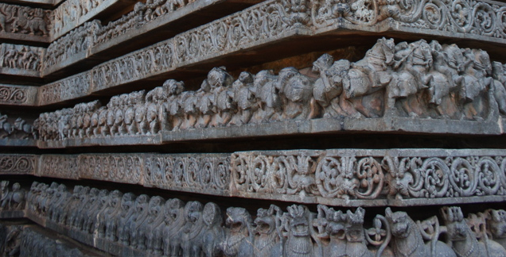<p class="wp-caption-text">Foundation Stones</p></div>
<div id="attachment_285" class="wp-caption alignleft" style="width: 345px">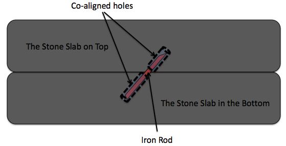<p class="wp-caption-text">Stone Slab Arrangement Schematic</p></div>
<p>Each set of stone slabs are placed one next to the other and in layers. On top of each stone slab a hole is drilled such that the holes in stone slabs that are one on top of the other are aligned together. Before laying the stone slab on top, an iron rod is place on the hole in the bottom slab and the stone slab on top is placed such that the iron rod fits into the top slab as well. This secures two adjacent stone slabs, and their weight keeps them in place.</p>
<h3>Lathe-turned Pillars</h3>
<p>The next are pillars. Lathe-turned cylindrical pillars are a distinctive feature of the Hoysala architecture (Mind you this is in the 12th century C.E!!). The prime movers for these lathes were horses and elephants. To give you an idea of the precision and the finish they managed to achieve, here is a picture:</p>
<div id="attachment_288" class="wp-caption alignnone" style="width: 437px">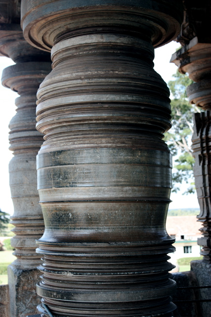<p class="wp-caption-text">Lathe-turned Pillars</p></div>
<p>Note that the pillars are not monolithic. They are multiple squat cylindrical stone structures which have been held together using a technique that is similar to the one which holds the foundations stone slabs together. Now if that isn&#8217;t impressive enough, some of these pillars could actually rotate! Zooming into the head of such a pillar reveals this:</p>
<div id="attachment_289" class="wp-caption alignnone" style="width: 398px">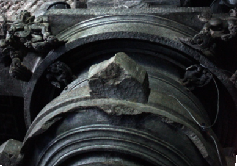<p class="wp-caption-text">Pillar Head</p></div>
<p>Notice how the pillar seems to be going into an inverted cylindrical receptacle. Between the pillar and the walls of the receptacle once rolled stone ball bearings, and that&#8217;s how the pillars rotated!</p>
<h3>Carvings on the Pillars</h3>
<p>Next come the carvings on the pillars. Looking at the carvings on the pillars I though that the squat cylinders which make up the pillar have the carving done on them first and are subsequently installed into place. However, this half done pillar convinced me otherwise:</p>
<div id="attachment_291" class="wp-caption alignnone" style="width: 650px">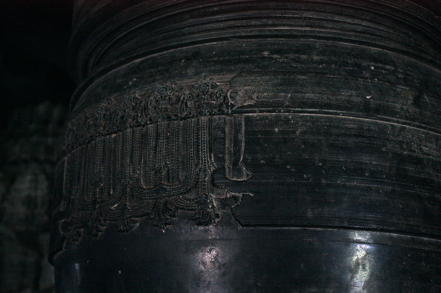<p class="wp-caption-text">Incomplete Carving</p></div>
<h3>Statues on the Pillars</h3>
<p>The junction between the pillars and the roof are adorned with monolithic stone statues as seen below:</p>
<div id="attachment_294" class="wp-caption alignnone" style="width: 650px">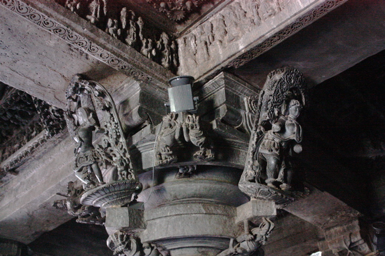<p class="wp-caption-text">Statues Adorning the Pillar</p></div>
<p>Again, the technique used to install these statues is very similar to the technique used to keep the foundation stones together. A clue to this is seen in a corner where the statue has been vandalized by the British (and now sits in the British museums), take a look:</p>
<div id="attachment_295" class="wp-caption alignleft" style="width: 310px">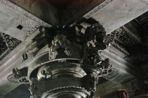<p class="wp-caption-text">Vandalized Corner</p></div>
<p>See the square hold in the stone slab on the roof in the top left side of the photograph? A similar hole can be bound on the pillar where the base of the statue stood.</p>
<p>This implies that the statue was installed at the same time as the stone slabs were laid on the roof. Just imagine the logistics and coordination necessary to accomplish this across four pillars, four statues per pillar, and all of it simultaneously!</p>
<h3>General Techniques for Stone Carvings</h3>
<p>The stone carvings all over the temple follow a similar pattern. The smooth and polished stone slabs are put in place first as seen below:</p>
<div id="attachment_296" class="wp-caption alignnone" style="width: 644px">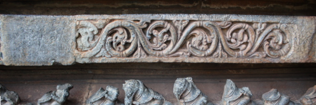<p class="wp-caption-text">Starting with a blank Slate</p></div>
<p>On the blank slab the sculptures then carve a rough outline of the design they wish to realize. We see a glimpse of this process below:</p>
<div id="attachment_297" class="wp-caption alignnone" style="width: 650px">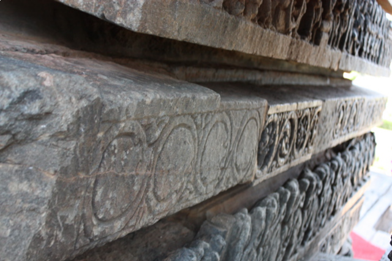<p class="wp-caption-text">Carving the outline</p></div>
<p>After this begins the actual sculpting of the stone. Below is a partially done piece. The finished carving is to the left and the work-in-progress carving is to the right (duh!).</p>
<div id="attachment_298" class="wp-caption alignnone" style="width: 650px">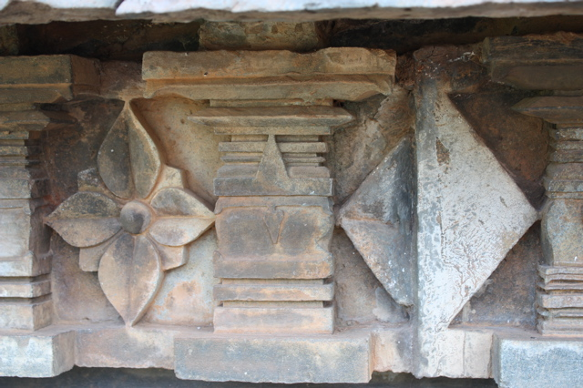<p class="wp-caption-text">Work-in-progess Carving</p></div>
<p>Using such techniques, the Hoysala constructed magnificent temples all around the Karnataka region. The twin temple in Halebidu was under construction for about 190 years (and still incomplete)! Despite this, its still quite a sight to behold. Look for yourself:</p>
<div id="attachment_300" class="wp-caption alignnone" style="width: 650px">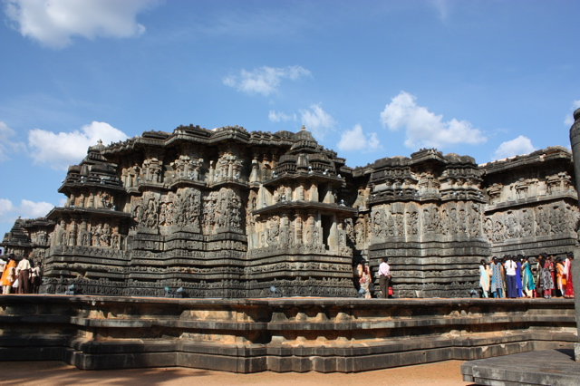<p class="wp-caption-text">Temple at Halebidu</p></div>
]]></content:encoded>
			<wfw:commentRss>http://www.semanticoverload.com/2008/12/18/hoysala-construction-techniques/feed/</wfw:commentRss>
		<slash:comments>11</slash:comments>
		</item>
	</channel>
</rss>
